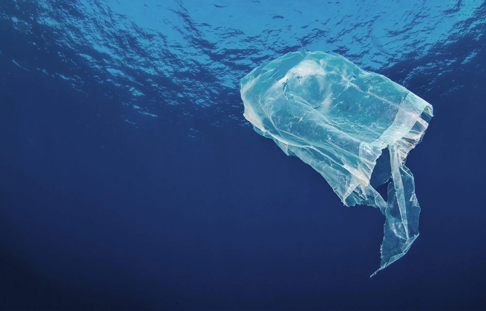
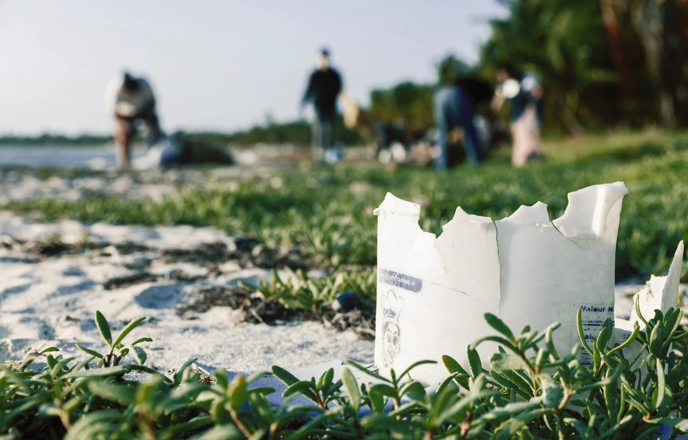
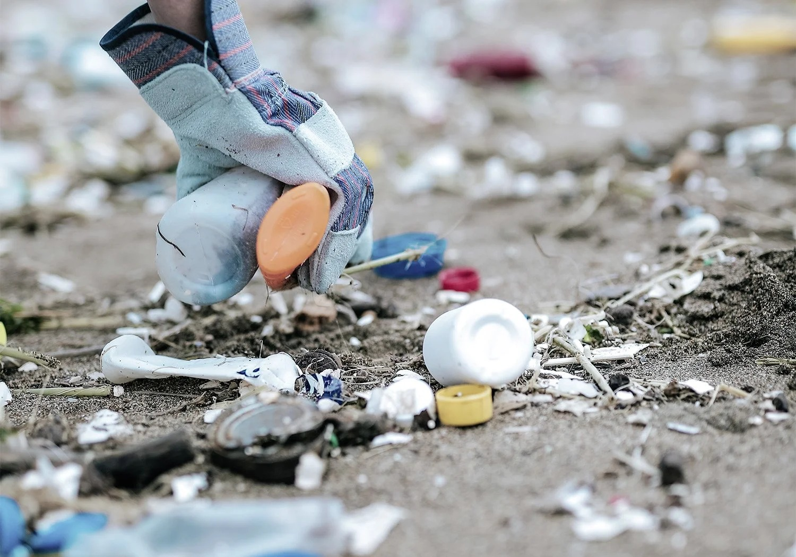
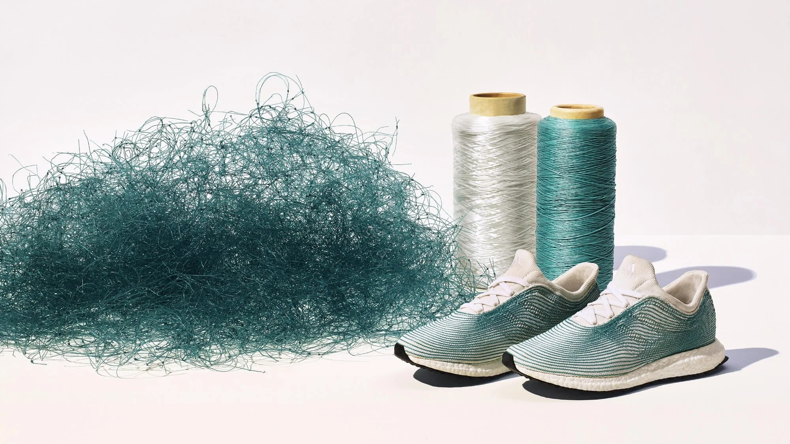
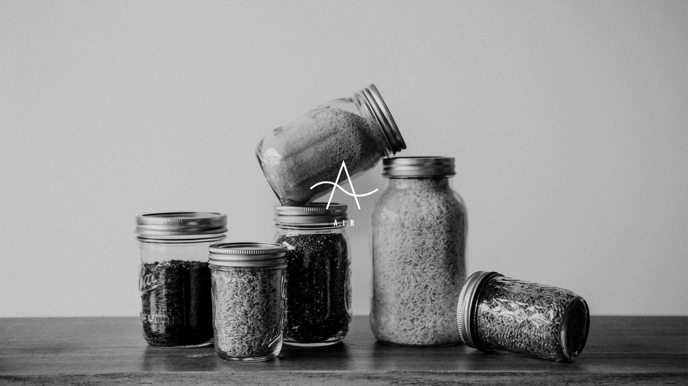

우리는 해양 환경을 단순히 보호의 대상이 아닌, 반드시 회복시켜야 할 공동의 자산으로 바라봅니다.
플라스틱 문제를 근본적으로 해결하기 위해 수거, 재생, 그리고 재설계를 통해 지속 가능한 변화를 만들어가고 있습니다.

바다는 단순한 자원이 아닌, 우리가 함께 지켜나가야 할 중요한 환경입니다.
다양한 데이터를 통해 해양 환경에 변화가 나타나고 있으며, 플라스틱 사용과 폐기 과정에서 발생하는 영향 또한 점차 확대되고 있습니다.
이러한 흐름을 이해하는 것은 지속 가능한 방향을 고민하는 데 있어 중요한 출발점입니다.
우리는 현재의 상황을 바탕으로 보다 책임 있는 선택과 실질적인 변화를 만들어가기 위해 노력하고 있습니다.


0
0
2026년까지 3배
• 본 수치는 UNEP 및 OECD 자료를 기반으로 합니다.

버려진 플라스틱은 더 이상 폐기물이 아닙니다.
우리는 해양으로 유입되기 전 플라스틱을 수거하고,
이를 재생 소재로 전환해 새로운 제품으로 이어가고 있습니다.
이러한 순환 구조는 자원 낭비를 줄이고, 환경에 미치는 영향을 실질적으로 낮추는 방법입니다.
0
0
0
• 본 수치는 글로벌 환경 연구 및 산업 보고서를 기반으로 합니다.